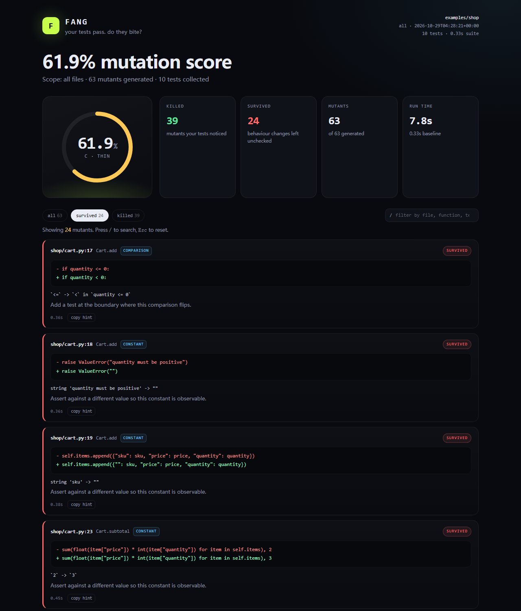

Fang mutates only the Python lines in your diff, runs your suite against each change, and shows the mutations your tests failed to notice. Zero runtime dependencies. CI-first. MCP-ready.

Only added lines become mutants. A 40-line PR produces a small, fast, reviewable run instead of a nightly job.
A surviving mutant means the suite still passed after a behavioural change. Each card gives the exact edit and a test hint.
fang mcp exposes the analysis over stdio. An agent can write tests, re-run the diff, and watch the score move.
Mutation score is the share of generated mutants your suite detected. A mutant is a valid, small edit — a flipped comparison, a changed constant, a removed return value. If the suite still passes, it survived, which means no test observed that behaviour.
Survivors are questions, not verdicts. Some mutants are equivalent and cannot be observed. The hint on each card tells you which assertion would settle it. The self-audit is Fang pointed at its own mutation engine: the first run scored 48.3%, and the survivors were real gaps in Fang's tests.
Everything here is generated by the tool in this repository: a self-contained HTML report, a PR-comment summary, an SVG badge, and JSON. No LLM, no coverage run, no external service.